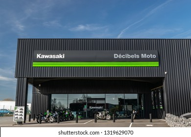
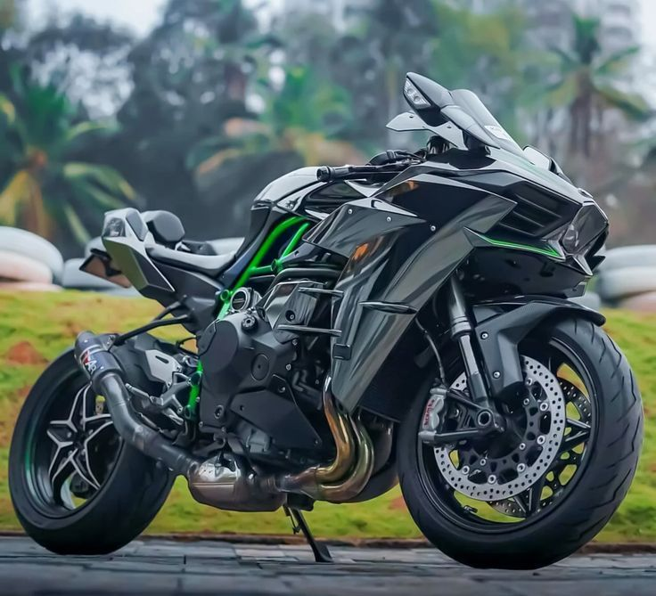
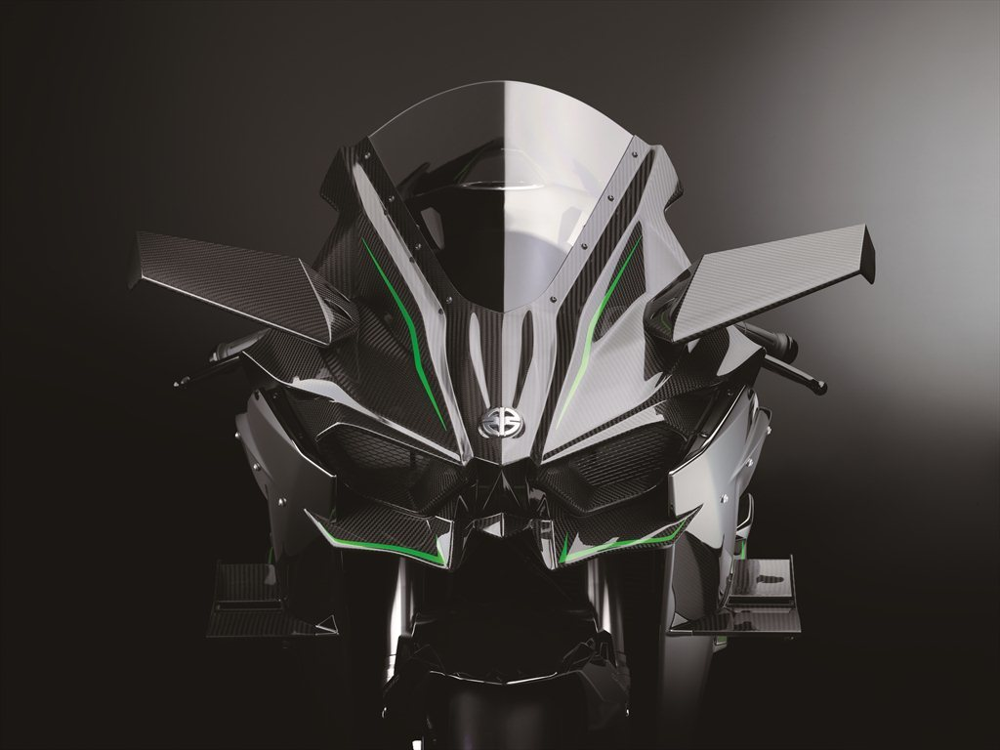
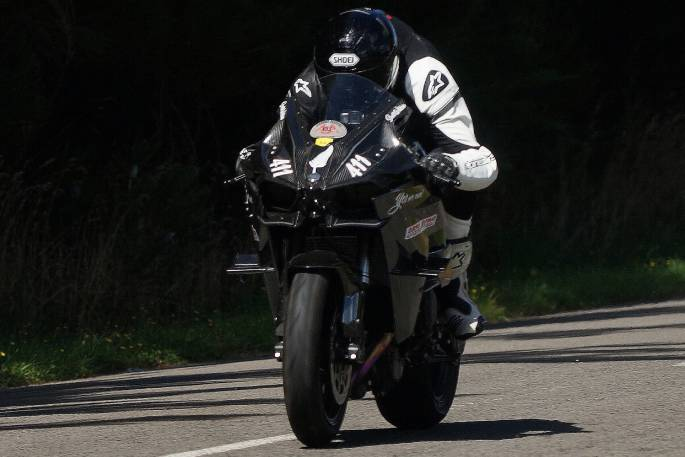
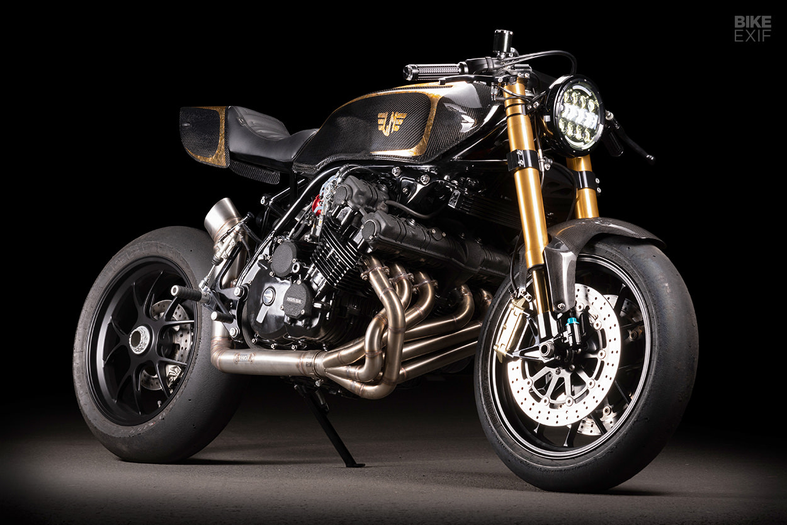
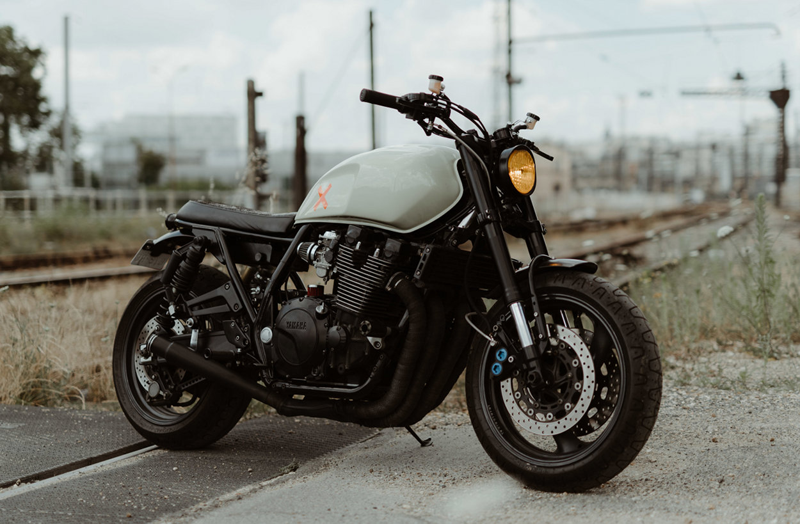
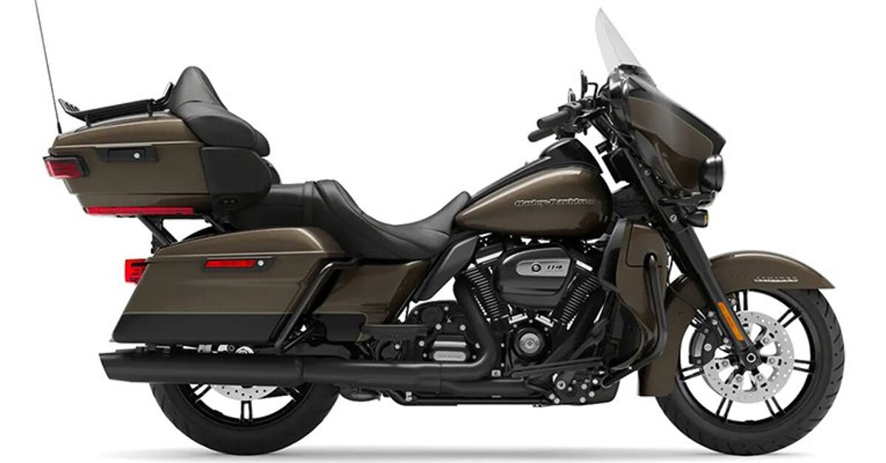

The Ninja Kawasaki H2 is a high-performance motorcycle produced by Kawasaki, a Japanese multinational corporation that specializes in manufacturing motorcycles, ATVs, and other vehicles. The H2 is known for its sleek design, powerful engine, and exceptional handling capabilities.
The Ninja Kawasaki H2 is equipped with a 1,998cc, 4-cylinder, DOHC, 16-valve engine that produces a maximum power output of 200 horsepower and a maximum torque of 165 lb-ft. This engine is paired with a 6-speed transmission and a belt-driven, reverse-laydown clutch, providing smooth and responsive acceleration.
The H2 features a unique, aerodynamic design with a low-slung, sporty stance, and a distinctive, angular fairing. It also comes equipped with advanced technology, such as a 4-axis Inertial Measurement Unit (IMU) and Kawasaki's Electronic Rider Support (ERS) system, which includes features like traction control, ABS, and power modes.
The Ninja Kawasaki H2 is a high-performance motorcycle designed for experienced riders who are looking for a thrilling, adrenaline-fueled riding experience. It is not suitable for beginners or casual riders due to its powerful engine and advanced handling capabilities.
So before you even think of riding one of these, ask yourself that important question... do you really wanna go that fast!?
This ain't no game boy!
Truly this bike is a monster on wheels, one little mistake can leave you impaired for life.
Pricing
The Ninja Kawasaki H2 is sold for: Low - $26,999, Average - $40,440, High - $58,100.
Which sums up to a satisfactory 25 million, in Naira - shipping included.
Performance_
The Kawasaki H2 is a high-performance motorcycle that has been in production since 1972. It is known for its exceptional power, speed, and handling, making it a favorite among experienced riders. The H2 is powered by a large-displacement, inline-four engine that produces a significant amount of power and torque. This engine, combined with the bike's lightweight and aerodynamic design, allows the H2 to achieve incredible top speeds and accelerate rapidly.
The bike's suspension and braking systems are also designed to handle the high-performance demands placed on it. The H2 features a front fork suspension system and a rear horizontal back-link suspension system, providing a smooth and stable ride, even at high speeds. The braking system includes dual 330mm petal disc brakes in the front and a single 276mm petal disc brake in the rear, providing ample stopping power for the bike's high-performance capabilities.
In addition to its impressive technical specifications Kawasaki H2 has a distinctive and iconic design. The bike's sleek, aerodynamic bodywork, along with its powerful engine, make it a striking and memorable sight on the road or track. The H2's design has been updated and refined over the years, with various models and updates released to keep the bike at the forefront of motorcycle technology and performance.
The Kawasaki H2 has a long and storied history, with various models and updates released over the years. It remains a highly sought-after motorcycle among enthusiasts and collectors, and its legacy continues to inspire and influence motorcycle design and performance.
Overall, the Kawasaki H2's performance is unmatched in its class, making it a legendary motorcycle that continues to inspire and influence motorcycle design and performance.
Design_
The Ninja Kawasaki H2 has a unique and aerodynamic design that sets it apart from other sport bikes on the market. Here are some key aspects of its design:
1. Aerodynamics: The bike's sleek, aerodynamic bodywork is designed to reduce air resistance and improve high-speed stability. The front fairing, side cowls, and rear cowl are all shaped to minimize drag and maximize downforce, helping the rider maintain control at high speeds.
2. Ergonomics: The Ninja Kawasaki H2 is designed to provide a comfortable and ergonomic riding position for both long and short rides. The seat height is relatively low, making it accessible to a wide range of riders, and the handlebars are positioned to provide optimal control and comfort during spirited riding.
3. Lighting: The bike features LED headlights, LED turn signals, and an LED taillight, which not only provide excellent visibility but also add to the bike's unique and eye-catching design. The LED lights are also energy-efficient, helping to reduce fuel consumption and emissions.
4. Wheels: The Ninja Kawasaki H2 is equipped with large, 17-inch cast-aluminum wheels, which provide exceptional handling and stability, especially during high-speed cornering and braking. The wheels are also designed to be lightweight and durable, helping to improve the bike's overall performance and fuel efficiency.
5. Colors: The Ninja Kawasaki H2 is available in a range of vibrant colors, including Metallic Spark Black, Candy Lime Green, and Candy Blazed Orange. These colors not only add to the bike's visual appeal but also help to reduce the risk of damage from road debris and other hazards.
6. Customization: The Ninja Kawasaki H2 is highly customizable, allowing riders to personalize their bikes to suit their individual preferences and riding styles. This includes a range of accessories, such as slip-on exhausts, intake systems, and suspension components, as well as a variety of paint and graphics options.
Overall, the Ninja Kawasaki H2's design is a perfect blend of form and function, providing both exceptional performance and a unique, eye-catching appearance. Its sleek, aerodynamic bodywork, ergonomic riding position, and advanced technology features make it a popular choice among experienced riders looking for a high-performance sport bike.
Technology_
The Kawasaki H2 is a technological marvel, featuring a range of advanced technologies that contribute to its exceptional performance and handling. Some of the key technologies found in the H2 include:
1. Kawasaki's proprietary traction control system (TCS): This advanced system helps improve traction and stability by controlling engine power and rear-wheel braking. TCS works by analyzing the bike's speed, throttle position, and front-wheel speed, and then adjusting engine power and rear-wheel braking to help the rider maintain control, especially in adverse road conditions.
2. Kawasaki's electronic throttle valve system (ETV): This advanced throttle control system allows for precise and responsive throttle input, helping to improve the bike's acceleration, handling, and fuel efficiency. ETV works by electronically controlling the throttle valve, allowing for more precise control of engine power and torque.
3. Kawasaki's cornering management function (CMF): This advanced technology helps improve the bike's handling and stability by adjusting engine power and braking force based on the bike's lean angle. CMF works by analyzing the bike's lean angle and then adjusting engine power and braking force to help the rider maintain control and improve overall handling.
4. Kawasaki's intelligent anti-lock braking system (ABS): This advanced braking system helps improve the bike's braking performance and control by preventing the rear wheel from locking up during hard braking. ABS works by electronically controlling the rear brake, allowing for more consistent and predictable braking performance.
These are just a few examples of the advanced technologies found in the Kawasaki H2. The bike's combination of cutting-edge technology and exceptional performance make it a highly sought-after motorcycle among enthusiasts and collectors.
Saftey_
The Kawasaki H2 is designed with safety in mind, featuring a range of advanced safety technologies and features that help improve its handling, stability, and overall safety. Some of the key safety technologies and features found in the H2 include:
1. Kawasaki's advanced traction control system (TCS): This system helps improve traction and stability by controlling engine power and rear-wheel braking. TCS works by analyzing the bike's speed, throttle position, and front-wheel speed, and then adjusting engine power and rear-wheel braking to help the rider maintain control, especially in adverse road conditions.
2. Kawasaki's electronic throttle valve system (ETV): This advanced throttle control system allows for precise and responsive throttle input, helping to improve the bike's acceleration, handling, and fuel efficiency. ETV works by electronically controlling the throttle valve, allowing for more precise control of engine power and torque.
3. Kawasaki's cornering management function (CMF): This advanced technology helps improve the bike's handling and stability by adjusting engine power and braking force based on the bike's lean angle. CMF works by analyzing the bike's lean angle and then adjusting engine power and braking force to help the rider maintain control and improve overall handling.
4. Kawasaki's intelligent anti-lock braking system (ABS): This advanced braking system helps improve the bike's braking performance and control by preventing the rear wheel from locking up during hard braking. ABS works by electronically controlling the rear brake, allowing for more consistent and predictable braking performance.
In addition to these advanced safety technologies, the Kawasaki H2 also features a range of standard safety features, such as a large, adjustable windshield, a low seat height, and a durable, corrosion-resistant steel frame. These features help improve the bike's visibility, comfort, and durability, further enhancing its overall safety.
Overall, the Kawasaki H2 is designed with safety in mind, featuring a combination of advanced safety technologies and standard safety features that help improve its handling, stability, and overall safety.
Competition_
The Kawasaki H2 has faced various competitors throughout its history, as it has been in production since 1972. Some of the key competitors of the H2 include:
1. Honda CBX: The Honda CBX was a rival to the Kawasaki H2 in the 1970s and 1980s, as both bikes were high-performance, large-displacement inline-four motorcycles. The CBX was known for its advanced technology, including its V4 engine and advanced suspension system, which made it a formidable competitor to the H2.
2. Yamaha XJ1300: The Yamaha XJ1300, also known as the Star Venture, was a competitor to the Kawasaki H2 in the 1990s and 2000s. The XJ1300 was a large-displacement, touring-oriented motorcycle that featured a V-twin engine and advanced suspension and braking systems, making it a strong competitor to the H2.
3. Harley-Davidson Electra Glide: The Harley-Davidson Electra Glide has been a competitor to the Kawasaki H2 since the 1990s, as both bikes are high-performance, touring-oriented motorcycles. The Electra Glide features a large-displacement V-twin engine and advanced suspension and braking systems, making it a strong competitor to the H2.
These are just a few examples of the competitors the Kawasaki H2 has faced throughout its history. The H2 has always been known for its exceptional performance, handling, and technology, which has helped it maintain its status as a legendary and highly sought-after motorcycle among enthusiasts and collectors.
Overall, the Ninja Kawasaki is a highly regarded and iconic sport bike that has stood the test of time and continues to be a favorite among motorcycle enthusiasts.